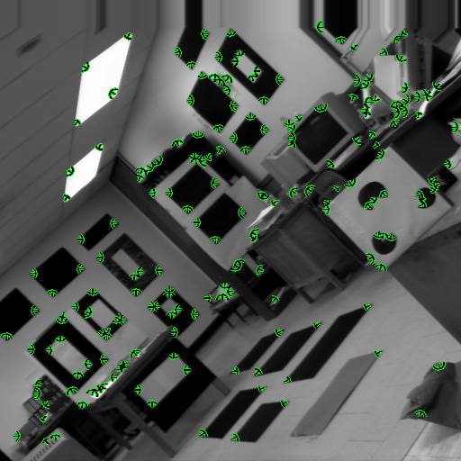
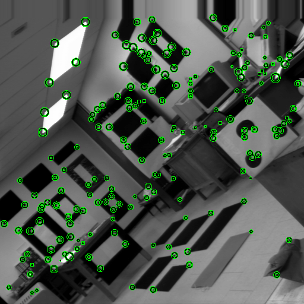
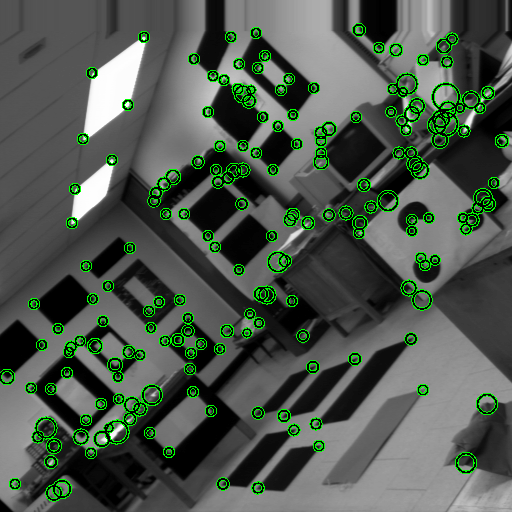

The three most commonly used features in computer vision are regions, edges, and corners. Whereas regions are normally attributed properties to make them useful as input for subsequent processing stages such as matching, little except for strength was extracted by early edge and corner detectors
We describe methods to measure the following properties of grey level corners: subtended angle, orientation, contrast, bluntness (or rounding of the apex), and boundary curvature (for cusps). Unlike most of the published methods for extracting these properties these methods are relatively simple, efficient and robust. They rely on the corner being pre-detected by a standard operator, thus making the measurement problem more tractable.
Some examples are shown below:
detection of corner angle

detection of corner contrast
(indicated by the size of circle)

detection of corner bluntness
(indicated by the size of circle)

More details are given in:
return to Paul Rosin's homepage